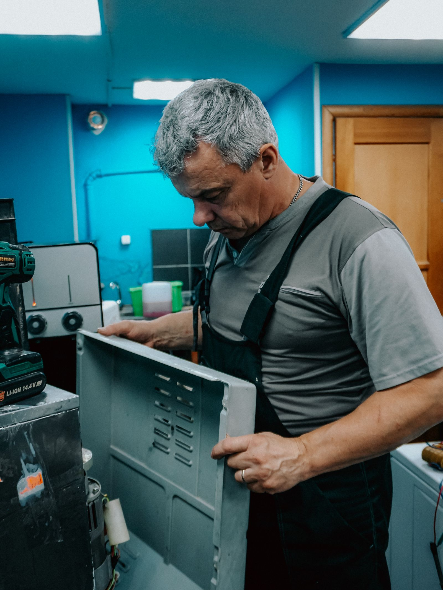
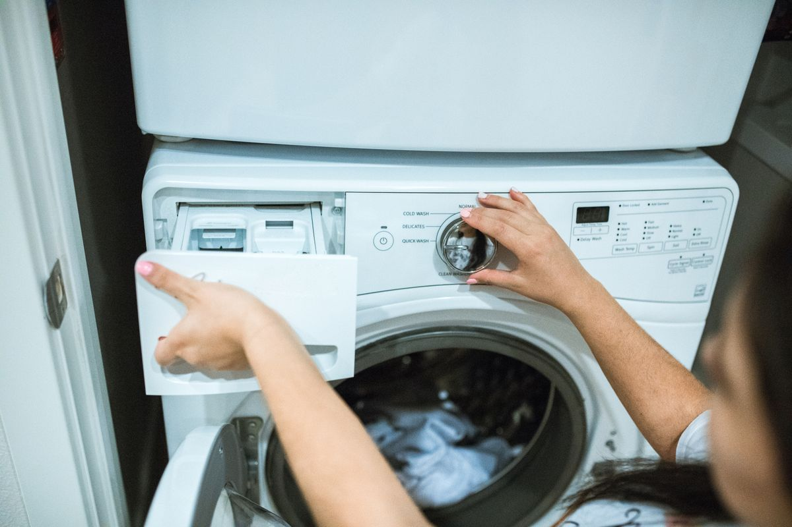
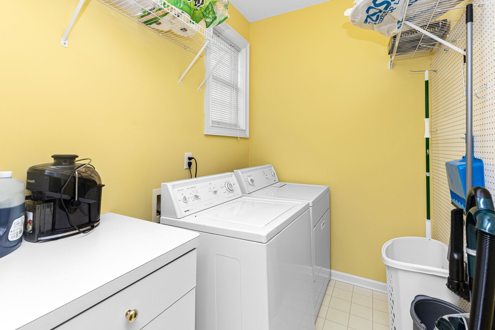
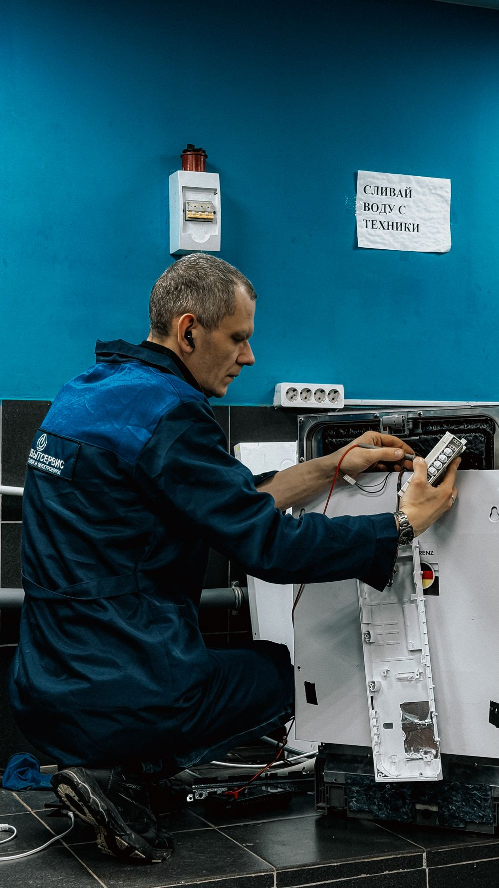
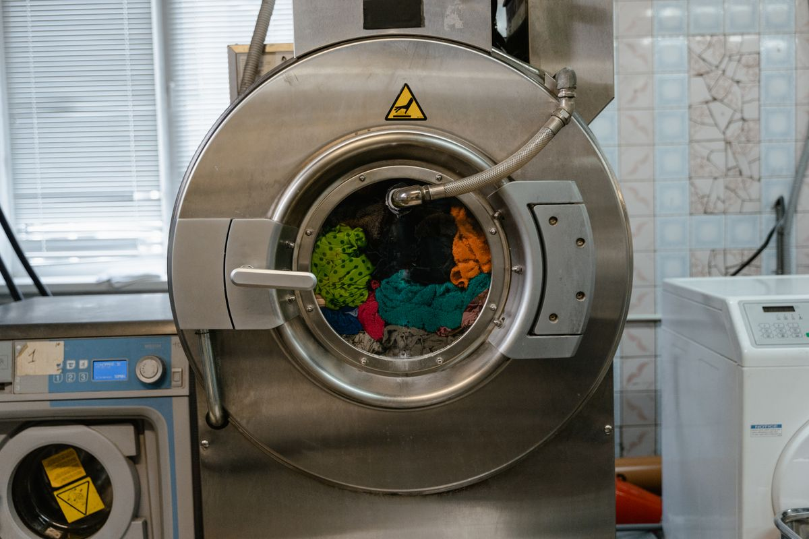

Florianópolis · Barra do Sambaqui
Máquina de lavar parou?
A Camargo's trabalha com conserto de máquinas de lavar roupas. Conte o que está acontecendo e consulte o atendimento pelo WhatsApp.
Camargo's em Florianópolis
A rotina não pode parar.
Máquina de lavar com problema muda o ritmo da casa. A Camargo's é uma empresa de conserto de máquinas de lavar roupas localizada na Barra do Sambaqui, em Florianópolis.
Para consultar o atendimento, informe o modelo do equipamento e descreva o que ele está apresentando. Assim a conversa começa com o contexto certo.
Veja como entrar em contato
Imagem ilustrativaO serviço
Conserto de lavadoras.
Se a máquina não está funcionando como deveria, envie uma mensagem para consultar o atendimento. Explique a falha, informe a marca e o modelo e combine os próximos passos diretamente com a Camargo's.
- Conversa inicial sobre o problema
- Informações do equipamento para orientar o atendimento
- Condições e disponibilidade confirmadas por contato direto
Comece com três informações.
Diga a marca e o modelo, se souber.
Conte o que acontece quando tenta usar a máquina.
Envie uma mensagem para combinar a avaliação do atendimento.
A máquina faz parte do dia a dia.
Fotografias ilustrativas de equipamentos e atendimento técnico. Não são registros de trabalhos da Camargo's.



Contato
Fale sobre a sua máquina.
Descreva o problema e informe a marca e o modelo. A Camargo's confirma disponibilidade e condições do atendimento diretamente pelo contato.
Dúvidas
Antes de entrar em contato.
Que tipo de equipamento a Camargo's atende?
O serviço informado é conserto de máquinas de lavar roupas. Envie marca e modelo para confirmar o atendimento ao seu equipamento.
É possível saber o valor antes da avaliação?
Conte o problema e informe o modelo pelo WhatsApp. As condições do serviço são confirmadas diretamente com a Camargo's.
Há atendimento em domicílio?
O perfil consultado não informa essa modalidade. Confirme a disponibilidade pelo telefone ou WhatsApp.
Qual é o horário de atendimento?
O horário não foi informado no perfil consultado. Entre em contato para confirmar.
Localização
Na Barra do Sambaqui.
Servidão Martinho Manoel Peixoto, 163Barra do Sambaqui, Florianópolis - SC
CEP 88051-440
Consulte a Camargo's antes de se deslocar para confirmar as condições do atendimento.
Abrir no Google Maps